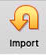
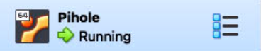
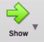

Pihole
Info
Pihole is used as a network wide Ad blocker using DNS.
Note
There are two ways to install PiHole.
- If installing from scratch, go to Set Up From Scratch section
- If installing from a precreated .OVA Virtual Machine file, go to the Set Up From Virtual Machine File section
Set Up From Scratch
Note
Use these directions if setting up from scratch
Create a VM using VirtualBox.
See Create VM for details.
Install PiHole
- RUN in terminal of PiHole VM:
More details on installation can be found at https://github.com/pi-hole/pi-hole/#curl--ssl-httpsinstallpi-holenet--bash
curl -sSL https://install.pi-hole.net | bash - When you get to the blue "GUI" screen:
- Majorly accept default settings. Read through and change as you wish.
- When prompted for 'Upstream DNS Provider;, select which one you want. They all pretty much do the same thing. Recommendation: OpenDNS
- Install the suggested block lists (usually 'StevenBlack's Unified Hosts List' is the default)
- Install the Admin Web Interface, lighttpd and required PHP modules
- Enable Query logging if you wish
- Once installation is complete, note the 'Admin Webpage Login Password' -- The password cannot be retrieved later on, but it is possible to set a new password (or explicitly disable the password by setting an empty password)
Finalize Setup
Regardless if setting up PiHole from scratch, or from a Virtual Machine File, some final configuration/verification is required.
Continue to Set the VM to auto-launch in headless mode on Mac login
Set Up From Virtual Machine File
Note
Use these directions if setting up PiHole from a Virtual Machine .OVA file
Virtualbox Installation and Importing Applicance
- Download and install Virtualbox from https://www.virtualbox.org
-
Download OVA file from OneDrive
(Access to this link is restricted -- please confirm if you have access)
-
Open Virtualbox and click 'Import' 
- Click the folder icon next to the 'File' box and pick the .OVA file
- Click 'Continue'
- Appliance Settings: Change 'MAC Address Policy' to Include all network adapter MAC addresses. Leave all other settings the same. Click 'Import'
{kind=link}
Verify Settings
- Once the Applicance is imported, verify that the settings match the ones outlined above
- Ensure the correct IP address is reserved in the eero app. Details outlined above
Start Up
- Start VM in headless mode (click arrow next to start -> headless mode)

- Click 'Show'
Verify Connectivity
-
Verify internet connectivity by entering command
ping google.com. If you see a response similar to:the VM can reach the internet.64 bytes from 142.250.191.238: icmp_seq=93 ttl=57 time=42.931 msPress Ctrl + C to exit.
-
Verify IP Address by entering command
ip addr. Look at the result for theinet 192.168.4.xline. It should be the IP address specified in the eero reservation.1: lo: <LOOPBACK,UP,LOWER_UP> mtu 65536 qdisc noqueue state UNKNOWN group default qlen 1000 .... 2: enp0s3: <BROADCAST,MULTICAST,UP,LOWER_UP> mtu 1500 qdisc fq_codel state UP group default qlen 1000 link/ether 08:00:27:1a:f8:19 brd ff:ff:ff:ff:ff:ff inet 192.168.4.4/22 metric 100 brd 192.168.7.255 scope global dynamic enp0s3 valid_lft 14039sec preferred_lft 14039sec ....
Finalize Setup
Regardless if setting up PiHole from scratch, or from a Virtual Machine File, some final configuration/verification is required.
Continue to Set the VM to auto-launch in headless mode on Mac login
Set the VM to auto-launch in headless mode on Mac login
Download the script vboxlaunchagent.sh from https://www.whatroute.net/software/vboxlaunchagent.sh.zip
Move the downloaded file somewhere convenient, like the Desktop.
whatroute.net
LaunchAgents are configured with an Apple plist XML file installed in the users Library/LaunchAgents folder. When the user logs in to their account on the Mac, launchd will inspect these plist files and invoke the required program with specified arguments.
It can get a bit tricky to create a plist manually. They have very fussy and very unforgiving syntax requirements. This shell script will create the plist and install it in the LaunchAgents directory.
You can download the script from vboxlaunchagent.sh. Unzip the file and copy the script to a suitable directory on your machine.
Run the script using this syntax:
-
Find the name of the VM: In a terminal on MacServer directly (not the VM), run:
VBoxManage list vmsShould result in output similar to:
macmini@macserver ~ % VBoxManage list vms "Pihole" {c7ac734f-3fc7-4645-997b-3c78ef32d8f4}In this example, Pihole is the name of the VM.
-
In a terminal, run
replacingsh path/to/vboxlaunchagent.sh --headless --verbose "VMName"VMNamewith the name of the VM from the previous step, and/path/to/vboxlaunchagent.shwith the full path (likely will be~/Downloads/vboxlaunchagent.shif you just clicked the link above) -
Ensure that the output is similar to
VirtualBox VM found. . . : PiHole Created temporary file . : /tmp/org.virtualbox.launch.PiHole Created Launch Agent . . : /Users/macmini/Library/LaunchAgents/org.virtualbox.launch.PiHole.plist -
Reboot the Mac and ensure the VM auto-starts on login
(Script and explanation from https://www.whatroute.net/installerapp2iso.html)
Configure PiHole
- Remove or change admin web page password: RUN in terminal of PiHole VM:
sudo pihole -a -p - Open the Web UI (http://your.static.ip.address/admin)
- Configure as you wish
Set DHCP Server
- Open the eero app
- Go to Settings -> Network Settings -> DNS
- Set to 'Custom'
- Set 'IPv4 Primary' to the static IP address of PiHole
- Set 'IPv4 Secondary' to a backup DNS provider to use.
Available Providers
Usually it's a good idea to use the same DNS provider that you selected during PiHole setup. However, this is not required.
Some available providers:
- OpenDNS: 208.67.222.222
- Google: 8.8.8.8
- CloudFlare: 1.1.1.1
Warning
You can choose to not supply a secondary provider to force PiHole to be used exclusively.
However, if a secondary DNS provider is not set, if PiHole is down or unavailable to reqpond to queries, DNS queries will not be able to be resolved, resulting in no internet access.
 Once the DNS server is set, Congrats! Pihole is now in use for all devices on the network.
You can test PiHole by visiting a website that previously had ads, they should be blocked now :)
Once the DNS server is set, Congrats! Pihole is now in use for all devices on the network.
You can test PiHole by visiting a website that previously had ads, they should be blocked now :)
Troubleshooting Sites not Loading
Pihole is a tracking and ad-blocker. Because of this, some sites may not load, or be missing content.
Temporarily Disable Pihole
If this is a one-off thing that you need to load, you can temporarily disable Pihole across the whole network.
- Open the PiHole Web UI
- Click 'Disable'
- Choose an amount of time to disable. 5 minutes is usually sufficent.
PiHole is now disabled, and will be automatically re-enabled once the time elapses.
Add a site to the whitelist
- Open the PiHole Web UI
- Click 'Whitelist'
-
Type the domain where you are encountering issues in the 'Domain' field.
Add any comments as needed
-
Check the 'Add domain as wildcard' box
- Click 'Add to Whitelist'
Use the Audit Log
Audit Log will show the top allowed and blocked queries with quick access to blacklist or whitelist them
- Open the PiHole Web UI
- Click 'Tools' -> 'Audit Log'
Updating Pihole (Pihole and underlying Ubuntu OS)
If you see red text at the bottom of the PiHole web UI ‘Update Available’, it needs an update. This is currently a manual process, work in progress to automate it. There are two options, both do exactly the same thing. The SSH option may be easier.
Via SSH
Pihole Updates
-
Open a Terminal and enter command:
ssh pihole@pi.hole
If you get a message similar to:
The authenticity of host 'pi.hole (192.168.0.4)' can't be established. ED25519 key fingerprint is SHA256:jWxxjslC9ObhMty4d0UNERghKP6UWmetfEj80CKW6QY. This host key is known by the following other names/addresses: ~/.ssh/known_hosts:8: 192.168.0.4 Are you sure you want to continue connecting (yes/no/[fingerprint])?This is likely because you have not connected to the PiHole VM using SSH previously, and your computer cannot verify the authenticity of the server computer.
Verify the IP address is what you expect (in this example,
192.168.0.4) and if it’s correct, typeyesat the prompt.After you have sone this once, you likely will not have to do it again, unless the fingerprint key changes.
-
At the prompt
pihole@pi.hole's password:enter the PiHole user password. Once successfully connected, you should see a prompt similar topihole@pihole:~$. You are now SSHed into the PiHole VM! -
Run command
pihole -up - If prompted
[sudo] password for pihole:enter the PiHole user password - Wait for it to update. On success, you should see
[✓] Everything is up to date!
Ubuntu Updates
It’s also a good idea to update the underlying Ubuntu instance periodically, especially if there is a notice then you logged into the Pihole VM similar to:
91 updates can be applied immediately.
9 of these updates are standard security updates.
To do this:
- Run
sudo apt upgrade -
You may be prompted:
Enter YAfter this operation, 430 MB of additional disk space will be used. Do you want to continue? [Y/n] -
Wait for it to update. This may take a while, depending on the number of updates.
Via Apple Remote Desktop
Pihole Updates
- Open Apple Remote Desktop
- Select
MacServerfrom All Computers - Click on
Controlor from the taskbar, or chooseInteract > Control - A new window will open with the MacServer display.
- From the Dock, Applications Folder or Spotlight, open
VirtualBox - Ensure
Piholeis selected in the sidebar
 - Click
Show - A new window will open with the PiHole VM.
- In that new window, ensure you have a
pihole@pihole:~$prompt. If you do not, press Enter a few times to get to a new line. - Run command
pihole -up - If prompted
[sudo] password for pihole:enter the PiHole user password - Wait for it to update. On success, you should see
[✓] Everything is up to date!
{kind=link}
{kind=link}
Ubuntu Updates
It’s also a good idea to update the underlying Ubuntu instance periodically, especially if there is a notice then you logged into the Pihole VM similar to:
91 updates can be applied immediately.
9 of these updates are standard security updates.
To do this:
- Run
sudo apt upgrade -
You may be prompted:
Enter YAfter this operation, 430 MB of additional disk space will be used. Do you want to continue? [Y/n] -
Wait for it to update. This may take a while, depending on the number of updates.